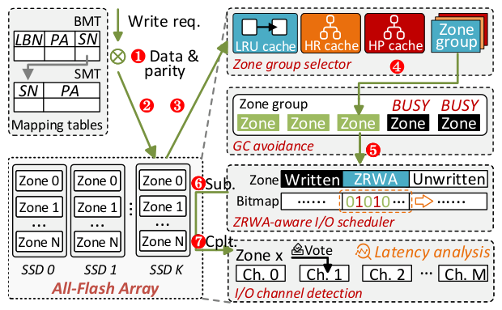
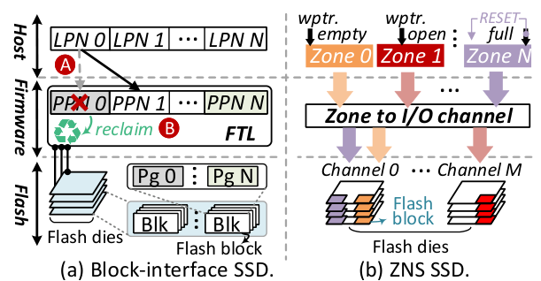
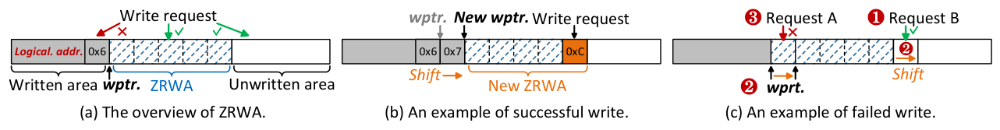
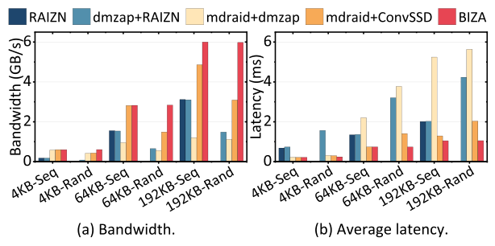
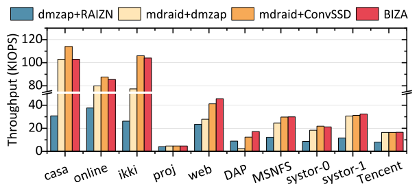
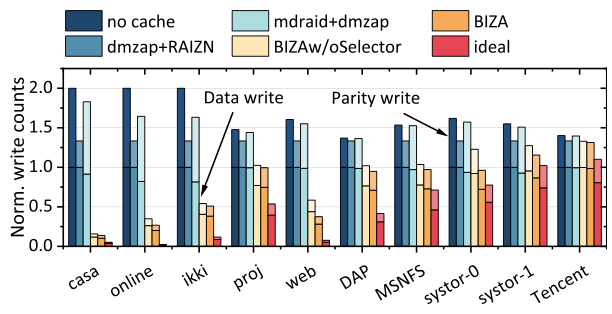
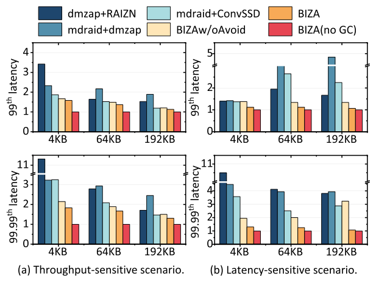

BIZA: Design of Self-Governing Block-Interface ZNS AFA for Endurance and Performance
This page was written by an AI model to give a high-level overview of the paper. Please check the paper for detail: ACM Digital Library.
All-flash arrays (AFAs) bundle several SSDs into a RAID-like array for capacity, throughput and fault tolerance. Because NAND flash only supports out-of-place updates, every AFA must decide who manages the SSD's internal bookkeeping (data placement and garbage collection, GC) and what interface it exposes to the host. Traditional block-interface AFAs, such as Linux's mdraid, hide all of this inside the SSD's flash translation layer (FTL): the FTL remaps every write to a free page and reclaims invalidated pages with GC, and this GC runs concurrently with, and interferes with, ordinary I/O. That interference shortens endurance and inflates tail latency, and the AFA has no way to influence it because the block interface was never designed to expose it.
Zoned namespace (ZNS) SSDs give the host that control: they expose zones that must be written sequentially via a per-zone write pointer, and hand data placement and GC scheduling to software. RAIZN builds an AFA directly from ZNS SSDs and exposes the ZNS interface to applications, but almost no real software is written for an interface that forbids random writes; even a "ZNS-friendly" log-structured file system like F2FS still needs a block-interface area for its metadata. An adapter such as dm-zap can translate ZNS back into a block interface, so stacking dm-zap on top of RAIZN (dmzap+RAIZN) looks like a free combination of both worlds. The paper's measurements on four Western Digital ZN540 ZNS SSDs in RAID 5 show this is not the case: dm-zap mixes data of different lifetimes inside the same zone, so GC must migrate still-valid data and write amplification grows by up to 33.3%; dm-zap only allows one in-flight write per zone and RAIZN centralizes partial-parity updates in one zone, so throughput reaches only 47.7% of the 6.4 GB/s ideal; and the host is unaware of GC events, so GC and foreground writes contend and 99.99th-percentile tail latency rises by up to 10.3x.
BIZA's key idea is to stop treating the adapter and the ZNS AFA engine as two independent black boxes and instead fuse them into one indirection layer that exposes the familiar block interface to applications while internally scheduling both ordinary writes and GC itself through the ZNS interface. This lets BIZA exploit two properties of ZNS SSDs that a naive adapter ignores: the zone random write area (ZRWA), a small in-place-update buffer sitting just ahead of each zone's write pointer, and the intra-zone and inter-zone parallelism of the underlying flash dies and I/O channels.
Concretely, every write is placed by a ghost-cache-based zone group selector that tracks each chunk's predicted reaccess count and reuse distance (without caching the chunk's data) and reserves the scarce ZRWA only for chunks likely to be rewritten again soon and cheaply, keeping obsolete data from polluting the buffer. A guess-and-verify mechanism infers, and online-corrects with a vote scheme, which zones share an I/O channel, so a GC-avoidance step can steer background GC and foreground writes to different channels. Finally, a ZRWA-aware I/O scheduler tracks each zone's in-flight writes with a bitmap and a sliding window so it can safely dispatch multiple writes to the same zone in parallel without the write-ordering failures a naive parallel implementation would hit.
Implemented as a 4K-LOC Linux device mapper (plus 1K LOC of block-layer and NVMe-driver support for ZRWA) and evaluated on four WD Ultrastar DC ZN540 ZNS SSDs in RAID 5, BIZA reduces write amplification by 42.7%, raises write throughput by 93.2%, and cuts 99.99th-percentile tail latency by 62.8%, compared to the state-of-the-art AFA baselines (RAIZN, dmzap+RAIZN, mdraid+dmzap), while still offering applications the ordinary block interface.

Key takeaways
- Block-interface AFAs hide GC and placement inside the SSD, hurting endurance and tail latency; ZNS-interface AFAs (RAIZN) expose that control but break compatibility because they forbid random writes.
- A naive fix, stacking a block-to-ZNS adapter (dm-zap) on RAIZN, restores compatibility but throws away ZNS's benefits: up to 33.3% more flash writes, only 47.7% of ideal throughput, and up to 10.3x higher tail latency under GC.
- BIZA merges the adapter and the ZNS AFA engine into one layer: applications still see a block interface, but BIZA itself drives placement, GC scheduling and write dispatch through the ZNS interface.
- Three mechanisms do the work: a ghost-cache zone group selector that reserves the zone random write area (ZRWA) for high-profit chunks; a guess-and-verify scheme that learns zone-to-channel mappings so GC can avoid the channels serving user writes; and a ZRWA-aware scheduler that enables safe parallel writes per zone.
- On four WD ZN540 ZNS SSDs in RAID 5, BIZA cuts write amplification by 42.7%, raises write throughput by 93.2%, and cuts 99.99th-percentile tail latency by 62.8% versus RAIZN, dmzap+RAIZN and mdraid+dmzap.
From a block-interface adapter to a self-governing ZNS AFA
What ZNS changes at the device level, why both pure interfaces and a naive adapter fail, and how BIZA's three mechanisms recover ZNS's benefits behind a block interface.
1 · Flash, RAID, and why the block interface hides GC
NAND flash only supports out-of-place updates: a page must be erased before it can be reprogrammed. To hide this from the host, SSD firmware builds a flash translation layer (FTL) that remaps each logical page number (LPN) to a new physical page number (PPN) on every write and invalidates the old page. Garbage collection (GC) later reclaims invalidated pages, and because GC must read, migrate and erase, it runs concurrently with and interferes with foreground I/O, which is a known source of SSD tail latency. All-flash arrays (AFAs) bundle multiple SSDs for capacity and throughput, adding RAID-style redundancy (XOR parity for RAID 5, the paper's default focus) for fault tolerance.
Zoned namespace (ZNS) SSDs restructure this relationship by exposing zones instead of hiding the FTL. A zone maps to flash blocks spread across a group of dies the paper calls an I/O channel. Zones start empty, become open on the first write, and can only be written sequentially via a per-zone write pointer; they become full once written entirely and only return to empty via a RESET command, which also discards all their data. Hardware resources limit how many zones can be open at once (14 on the WD ZN540 used in this paper, up to 384 on some SSDs).

2 · Three interface choices, and why none of them alone work
Block-interface AFA (mdraid) keeps GC and placement inside the FTL, so it is maximally compatible but cannot influence endurance or tail latency. ZNS-interface AFA (RAIZN) hands GC scheduling and data placement to the host explicitly, which is good for endurance and tail latency but breaks compatibility: the ZNS interface only allows sequential writes, while nearly all existing software (file systems, databases) assumes random writes are available.
An adapter such as dm-zap bridges the two by maintaining a mapping from block numbers to zone-relative addresses, so a ZNS AFA can again look like an ordinary block device. The paper tests this combination (dmzap+RAIZN, and the related mdraid+dmzap, which maps each SSD individually before using conventional mdraid) on four WD ZN540 SSDs in RAID 5 and finds it discards most of ZNS's advantages:
| Shortcoming | dmzap+RAIZN | mdraid+dmzap | Root cause |
|---|---|---|---|
| Extra flash writes vs. user writes | up to 33.3% more | up to 54.6% more | dm-zap mixes data of different lifetimes in one zone; GC must migrate still-valid data from victim zones |
| Peak write throughput (ideal 6.4 GB/s) | 3.1 GB/s (47.7%) | 1.2 GB/s (18.4%) | dm-zap allows only one in-flight write per zone; RAIZN centralizes partial-parity updates in one metadata zone |
| 99.99th-pct. tail latency after GC starts | 10.3x higher | 2.2x higher | upper-layer software is unaware of GC events scheduled by dm-zap, so GC and I/O contend for the same resources |
3 · Zone random write area (ZRWA): a buffer baked into the zone
ZRWA, ratified in the NVMe specification and implemented in commodity ZNS SSDs, is a fixed-size area immediately after a zone's write pointer that allows in-place random writes, relaxing the strict sequential-write rule. It can be physically realized with battery-backed DRAM, NVM, or FTL-mapped high-endurance flash (SLC). ZRWA shifts right as writes complete: when a write targets a block ahead of the current window, the window slides to include it, and the data at the window's trailing edge is flushed out to the flash backbone.

| ZNS SSD | Zone capacity | ZRWA per open zone | Max. open zones | Total ZRWA |
|---|---|---|---|---|
| WD ZN540 | 1077 MB | 1 MB | 14 | 14 MB |
| DapuStor J5500Z | 18144 MB | 1 MB | 16 | 16 MB |
| Inspur NS8600G | 2880 MB | 1440 KB | 8 | 11.25 MB |
| Samsung PM1731a | 96 MB | 64 KB | 384 | 24 MB |
4 · Why ZRWA alone fails: reuse distance
Reuse distance is the amount of data written between two consecutive visits to the same address. Analyzing the SYSTOR workload set (2188 traces from enterprise virtual-desktop drives), the paper finds only 17% of data has a reuse distance shorter than ZN540's 14 MB total ZRWA. If chunks are placed in zones at random, obsolete data (which will not be rewritten again soon) occupies ZRWA just as readily as hot data, advancing the write pointer and evicting still-useful entries. The remaining 83% of updates, whose reuse distance exceeds the ZRWA size, cannot be absorbed: by the time the update arrives, the write pointer has already moved past its destination. This motivates separating consistently-refreshed chunks from obsolete ones before they are written, which is exactly what the zone group selector (Section 7 below) does.
5 · Parallelism within and across zones
Within a zone, the Linux block layer and NVMe driver may reorder submitted requests. If a request destined for a block ahead of the write pointer completes before a request destined for an earlier block, ZRWA shifts unexpectedly and the earlier request fails because its destination now lags behind the new write pointer. The same failure mode exists even without ZRWA (the special case of a zero-size ZRWA). The simplest fix, allowing only one in-flight write per zone (dm-zap's approach), avoids the failure but wastes parallelism: on the WD ZN540, a single in-flight write delivers only 34.7% of a zone's bandwidth, losing up to 65.3% (54.5% on average) of throughput compared to 32 in-flight writes across different write sizes. The NVMe APPEND command sidesteps reordering by letting the SSD, not the host, choose the write address, but the NVMe specification makes APPEND mutually exclusive with ZRWA, and most software is written against the block interface's explicit-address semantics rather than log-structured append. BIZA therefore keeps ZRWA and builds its own scheduler (Section 9) instead.
Across zones, placing writes on zones that map to different I/O channels avoids contention. On the WD ZN540:
| Scenario | Bandwidth | Avg. lat. | 50th-pct. lat. | 99.99th-pct. lat. |
|---|---|---|---|---|
| 1. Write a single zone | 1092 MB/s | 59 us | 41 us | 570 us |
| 2. Write two zones, identical I/O channel | 1092 MB/s | 118 us (1.0x) | 66 us (0.6x) | 2310 us (3.1x) |
| 3. Write two zones, diverse I/O channels | 2170 MB/s | 59 us | 46 us | 685 us |
Spreading writes across channels (Scenario 3) doubles bandwidth with latency close to the single-zone case. This pushes BIZA toward a decentralized design that gives up RAIZN's single centralized metadata zone for partial parities, since a centralized zone caps throughput regardless of how many other zones are writable in parallel. But a ZNS SSD decides and hides the zone-to-channel mapping internally for its own wear leveling, which is the problem Section 8 addresses.
6 · BIZA's architecture and write path
On a write, BIZA computes parities and decides which SSDs hold data and parity chunks according to the RAID level (for example left-asymmetric placement for RAID 5). The zone group selector then picks a destination zone group, a set of open zones mapped to different I/O channels, isolating hot chunks from obsolete ones. The GC-avoidance mechanism makes the final choice of which zone within that group to use, steering around any zone whose channel is currently busy with GC. The resulting chunk writes go to the ZRWA-aware I/O scheduler, which dispatches them in parallel using a sliding-window algorithm that avoids reorder failures. Completion latencies feed back into the guess-and-verify mechanism to refine its zone-to-channel assumptions. An update to a chunk still resident in ZRWA is applied in place; otherwise a new location is chosen by the same procedure. Reads simply look up the mapping tables and issue read commands, following the same path as other AFA designs.
BIZA locates data with two tables kept in host DRAM and persisted for crash consistency. The Block Mapping Table (BMT) has one row per logical block: a 40-bit physical address (an 8-bit SSD index plus a 32-bit in-SSD offset) and a 32-bit stripe number (SN) that keys into the Stripe Mapping Table (SMT). Each SMT row holds L 40-bit physical addresses for the stripe's parities, where L is the fault-tolerance degree (1 for RAID 5, 2 for RAID 6). With 4 KB blocks this design supports up to 4 PB of physical capacity, and for a RAID 5 of four 4 TB SSDs the tables cost 32 GB of host DRAM (0.19% overhead). For crash consistency, BIZA persists a 40-bit LBN and 32-bit SN per block in the SSD's out-of-band (OOB) area, written by hitchhiking on the same flash program operation as the data write (via the NVMe Protection Information feature), so persisting the mapping adds no extra flash writes.
7 · Zone group selector: a ghost-cache algorithm for endurance
A ghost cache stores only a chunk's attributes (predicted reaccess count and reuse distance), not its data, so its memory footprint is small. BIZA's selector chains three such caches:
- An LRU cache filters out chunks with poor temporal locality. On a hit, BIZA updates the chunk's predicted reuse distance (a weighted moving average of recent reuse distances) and reaccess number (an accumulated count).
- If a chunk's predicted reaccess number exceeds a threshold (3, empirically), it is promoted to the high-revenue (HR) cache, a priority queue that evicts the chunk with the lowest reaccess number back to LRU when full.
- If an HR-cache chunk's predicted reuse distance is below a threshold (twice the ZRWA size), it is further promoted to the high-profit (HP) cache, a priority queue that evicts the chunk with the largest reuse distance back to HR when full.
- Logical block numbers identify data chunks and stripe numbers identify parity chunks within all three caches.
BIZA sets up three zone-group types matching these caches: ZRWA-aware groups receive HP-cache chunks (high revenue, low cost, so they are reserved the scarce ZRWA to absorb many updates); GC-aware groups receive HR-cache chunks (high revenue but high cost, the main source of GC, so clustering them means a victim zone has mostly invalid chunks and little data to migrate); trivial groups receive everything else. Partial parities, which are refreshed on every subsequent write to their stripe, are always routed to ZRWA directly, bypassing the ghost-cache classification.
8 · GC avoidance: guess-and-verify channel detection
Because ZNS SSDs decide and hide the zone-to-I/O-channel mapping internally (for their own wear leveling), an AFA risks clustering zones that actually share a channel, defeating isolation between GC and user writes. BIZA first guesses that zones are bound to channels round-robin, a pattern prior work verified on most commodity ZNS SSDs, and confirms a handful of zones exactly once, at AFA creation, with an expensive zone-to-zone latency diagnosis (pausing user I/O and probing latency between pairs of open zones) to serve as ground truth.
- During normal operation, BIZA monitors the completion latency of user write requests online.
- If a zone's recent latency is significantly above average while GC is running, that zone casts a vote that it shares the currently busy channel.
- Once a zone accumulates repeated votes (3 in the paper's example), BIZA corrects its guessed channel to whichever channel received the most votes; a vote from a zone already confirmed by ground-truth diagnosis is trusted outright over others.
- With channel assignments maintained this way, the GC-avoidance mechanism tags the channel of any zone currently being garbage-collected (the GC-interfered zone) as BUSY, and new writes within a zone group avoid zones on a BUSY channel; in-place ZRWA updates ignore the tag, since ZRWA typically lives in on-device DRAM separate from the flash I/O channels and suffers only minor GC interference.
9 · ZRWA-aware I/O scheduler: safe parallel writes
To avoid the I/O-reorder failures described in Section 5 without the overhead of frequently querying the SSD for the write pointer's true position, BIZA tracks ZRWA state purely from information it already has, submissions and completions, using two per-zone host-DRAM structures: a bitmap, with one bit per block marking an in-flight write, and a sliding window, the portion of the bitmap representing the current ZRWA.
- Only write requests targeting blocks inside the sliding window are submitted to the device; requests targeting blocks outside it are postponed.
- When a submitted write completes, its bit in the bitmap is cleared.
- If the leftmost bit of the sliding window becomes zero, the window shifts right.
- The shift releases any postponed requests that now fall inside the window, letting them be submitted.
Results for all of these mechanisms, including the overall throughput, write-amplification and tail-latency numbers, are covered in the Evaluation tab.
10 · Implementation
BIZA is implemented as a pluggable Linux device mapper (4K lines of code). Supporting ZRWA's open-time configuration and related operations required 1K additional lines in the Linux block layer and NVMe driver, following the NVMe Zoned Namespaces Command Set Specification 1.1a and NVMe Technical Proposal 4076b. The ZRWA-aware I/O scheduler is implemented in the block layer as a drop-in alternative to a conventional scheduler such as mq-deadline. BIZA requires no hardware modification: ZRWA and the OOB area are already present in off-the-shelf commodity ZNS SSDs from multiple vendors.
Evaluation
Microbenchmarks, production I/O traces and two real applications, compared against RAIZN, dmzap+RAIZN, mdraid+dmzap and a conventional block-interface AFA.
All experiments run on a single server and are repeated 10 times, with averages reported. The AFA is a four-SSD RAID 5, built either from ZNS SSDs (for BIZA, RAIZN, dmzap+RAIZN, mdraid+dmzap) or from similarly specified conventional block-interface SSDs (for mdraid+ConvSSD).
| What | Value in the paper |
|---|---|
| Platform | Intel Xeon Gold 5320 (26-core, 2.2 GHz, hyper-threading), 512 GB DDR4 DRAM, Ubuntu 22.04 LTS, Linux kernel v5.15 |
| SSDs | 4x WD Ultrastar DC ZN540 ZNS SSDs (4 TB, 1077 MB zones, 1 MB ZRWA/zone, up to 14 open zones, 2170/3265 MB/s write/read) or 4x WD Ultrastar DC SN640 conventional SSDs (4 TB, 2250/3331 MB/s write/read) |
| Workloads | fio microbenchmarks (sequential/random, 4 KB to 192 KB, 1 job, I/O depth 32); production I/O traces from FIU, Microsoft MSRC, Microsoft MSPC, SYSTOR and Tencent Block Storage; F2FS with filebench (randomwrite, fileserver, oltp, webserver); RocksDB with db_bench (fillseq, fillrandom, fillseekseq) |
| Baselines | RAIZN; dmzap+RAIZN (dm-zap adapter revised to write all open zones in parallel, stacked on RAIZN); mdraid+dmzap (dm-zap per SSD plus mdraid, with a prior lock-scalability improvement integrated); mdraid+ConvSSD |
| Metrics | write/read throughput and average, 50th- and 99.99th-percentile latency; write amplification (flash writes / user writes, split into data and parity); CPU usage per GB/s bandwidth |
BIZA nearly exhausts the ZNS array's write bandwidth; the baselines cannot

What it shows. Write throughput and average latency across sequential and random patterns at I/O sizes from 4 KB to 192 KB, for RAIZN (sequential only, since it forbids random writes), dmzap+RAIZN, mdraid+dmzap, mdraid+ConvSSD, and BIZA. The ideal peak write throughput is 6.4 GB/s for the ZNS-based RAID 5 and 6.6 GB/s for the conventional one (3 of 4 SSDs serving data, 1 serving parity). dmzap+RAIZN reaches only 47.7% of ideal because of RAIZN's centralized metadata zone. mdraid+dmzap lags far behind mdraid+ConvSSD at 64 KB because mdraid splits writes into 4 KB requests that dm-zap serializes one-in-flight-per-zone, while the Linux block layer can re-merge 4 KB requests for a conventional SSD. BIZA achieves 2.7x, 2.5x and 0.4x higher bandwidth than dmzap+RAIZN, mdraid+dmzap and mdraid+ConvSSD respectively, averaged across all scenarios, reaching 92.2% of the ZNS array's ideal throughput, and outperforms RAIZN by 53.8% in average latency.
What to take from it. The gap between dmzap+RAIZN/mdraid+dmzap and BIZA is attributable to BIZA's decentralized metadata placement and parallel I/O scheduling, not to faster hardware, since all platforms use the same SSDs. mdraid+ConvSSD's shortfall from its own device's ideal throughput reflects known mdraid locking issues the paper does not fully resolve even with its scalability patch.
Read performance is unaffected by BIZA's write-path optimizations, as intended

What it shows. Read throughput and average latency at the same I/O sizes. All platforms perform similarly at 4 KB reads, since they share the same read path: a mapping-table lookup followed by a flash read. At 64 KB and 192 KB, mdraid+dmzap and mdraid+ConvSSD fall behind BIZA and dmzap+RAIZN because of mdraid's software bottleneck. Both BIZA and dmzap+RAIZN reach throughput comparable to the array's ideal read bandwidth of 12.8 GB/s (all 4 ZNS SSDs at maximum bandwidth).
What to take from it. BIZA's mechanisms target the write path only; the read path is unchanged from other ZNS-interface designs, and the results confirm there is no read-side regression from BIZA's write-side bookkeeping.
The ghost-cache zone group selector removes the bulk of avoidable write amplification

What it shows. Flash write counts (normalized to user writes, split into data and parity) with 14 open zones per SSD (56 MB of total ZRWA across 4 SSDs) and ghost caches sized 1,048,576 (LRU, 4 GB), 262,144 (HR, 1 GB) and 16,384 (HP, 64 MB) entries, for a combined 7.6 MB memory footprint. mdraid and RAIZN are given an equal-sized (56 MB) in-host-DRAM write buffer for fair comparison, though this buffering weakens their fault tolerance since buffered chunks are lost on failure. Against a "no cache" baseline, dmzap+RAIZN removes 42.5% of parity writes and mdraid+dmzap removes 4.4%, because RAIZN buffers only parity while mdraid buffers both data and parity but must periodically flush its volatile buffer. BIZA without the zone group selector (random zone-group assignment) already beats mdraid+dmzap by 32.5% on data writes, on average, because its ZRWA is non-volatile and needs no periodic flush. Adding the ghost-cache selector reduces writes a further 12.6% compared to that unselected version.
What to take from it. The improvement varies by workload with reuse distance: in the Tencent trace, 90.2% of chunks have reuse distances larger than the 56 MB ZRWA (versus 8.3% in the casa trace), so BIZA's selector has fewer opportunities to exploit temporal locality there. The paper's headline 42.7% write-amplification reduction is an average across its traced workloads, not a universal figure.
Channel-aware GC avoidance cuts most of the GC-induced tail-latency spike

What it shows. 99th- and 99.99th-percentile sequential write latency after GC starts, at I/O depth 32 (throughput-sensitive) and depth 1 (latency-sensitive), normalized to BIZA with no GC running. BIZA without the GC-avoidance mechanism (BIZAw/oAvoid, which may serve GC and user I/O on the same channel) experiences 1.0x, 0.9x and 1.4x higher 99.99th-percentile write latency than the no-GC ideal for 4 KB, 64 KB and 192 KB writes respectively, averaged across both scenarios. Full BIZA, with its guess-and-verify channel detection and GC avoidance, cuts these spikes by 27.4% relative to BIZAw/oAvoid in the throughput-sensitive scenario, and by 74.9% in the latency-sensitive scenario, where more idle storage resources are available to isolate GC from user I/O.
What to take from it. The benefit of GC avoidance scales with available idle resources; under heavy concurrent load (I/O depth 32) there is less room to route around a busy channel, so the improvement, while still substantial, is smaller than in the lightly loaded case.
FAQ
Q·What problem is this paper actually solving?▾
How to build an all-flash array (AFA) out of zoned namespace (ZNS) SSDs that gets ZNS's endurance and performance benefits without forcing every application and file system above it to be rewritten for ZNS's sequential-write-only interface.
Q·What is a ZNS SSD, in plain terms?▾
An SSD that exposes its storage as zones instead of hiding everything behind a flash translation layer. Each zone must be written sequentially, tracked by a write pointer, and the host (not the drive's firmware) decides which zone to write next and when to reclaim a full zone. This hands data placement and garbage collection control to the host, at the cost of losing ordinary random writes.
Q·If dm-zap already turns a ZNS SSD back into a block device, why isn't dmzap+RAIZN good enough?▾
Because dm-zap only translates addresses; it does not understand data lifetimes, I/O-channel topology, or GC timing. The paper measured dmzap+RAIZN generating up to 33.3% more flash writes than user writes, reaching only 47.7% of ideal throughput, and suffering up to 10.3x higher tail latency once GC starts, all because the adapter treats the ZNS AFA as an opaque block device rather than optimizing with it.
Q·What exactly is ZRWA, and is it the same thing as an SSD's normal write cache?▾
ZRWA (zone random write area) is a fixed-size window just ahead of a zone's write pointer that permits in-place, random-address writes, which an ordinary zone otherwise forbids. It behaves like a cache in that it can be implemented in DRAM, NVM or SLC flash, but it is tied to a specific zone and shifts forward with that zone's write pointer rather than being a general-purpose cache the host can address arbitrarily.
Q·Why can't a ZNS SSD just make ZRWA bigger and solve this problem directly?▾
ZRWA is implemented in scarce, often non-flash resources (battery-backed DRAM, NVM, or SLC flash), so commodity ZNS SSDs offer only 1 MB per open zone (11 to 24 MB total across the drives the paper tested). The paper's own trace analysis shows most updates have reuse distances far longer than that, so simply enlarging ZRWA a little would not help; BIZA instead decides which chunks deserve the ZRWA it has.
Q·How does BIZA decide which data is "hot" enough for ZRWA?▾
With a chain of three ghost caches that track only a chunk's predicted reaccess count and reuse distance, not its data. Chunks likely to be rewritten often (high reaccess count) are promoted to a high-revenue cache; among those, chunks that will be rewritten again soon (short reuse distance) are promoted further to a high-profit cache, and only high-profit chunks get a ZRWA-reserving zone group.
Q·Why does BIZA bother separating high-revenue chunks from high-profit chunks, instead of just using one cache?▾
High-revenue chunks are rewritten often but with long reuse distances, so reserving ZRWA for them would be wasteful (the pointer would move past the buffered data before the next write arrives). Grouping them separately in GC-aware zones instead means that when such a zone is garbage-collected, most of its chunks are already invalid, so there is little valid data to migrate, which is itself a second, distinct way the paper reduces write amplification.
Q·Why does the SSD hide which zones share an I/O channel, and how does BIZA find out anyway?▾
ZNS SSDs decide the zone-to-channel mapping internally as part of their own wear-leveling policy and do not expose it. BIZA first guesses a round-robin mapping (observed to hold on most commodity ZNS SSDs), confirms a few zones exactly with a one-time latency probe at array creation, and then corrects wrong guesses online by voting: if a zone's write latency spikes while GC is active on a particular channel, that is evidence the zone shares that channel.
Q·Why not just use the NVMe APPEND command instead of ZRWA to get parallel writes?▾
APPEND lets the SSD choose the write address, which avoids the reordering problem outright, but the NVMe specification forbids APPEND on zones opened with ZRWA, and most software expects to specify its own write address rather than write in an append-only, log-structured style. The paper chooses ZRWA for its write-amplification benefits and builds a custom scheduler to get parallelism instead.
Q·Does BIZA require any changes to applications or file systems above it?▾
No. BIZA is a Linux device mapper that exposes an ordinary block device; applications, file systems and databases run unmodified on top of it, which is the entire point of putting the complexity (zone group selection, GC avoidance, the I/O scheduler) inside BIZA rather than in RAIZN's ZNS-interface approach.
Q·Does BIZA need special hardware?▾
No. It relies only on features already present in off-the-shelf commodity ZNS SSDs, namely the ZRWA feature and the out-of-band (OOB) area used for persisting mapping-table entries.
Q·How does BIZA compare to plain mdraid on ordinary (non-ZNS) SSDs?▾
BIZA reaches throughput comparable to mdraid+ConvSSD in the I/O-trace evaluation and beats it in most of the microbenchmark scenarios, while additionally offering the write-amplification and tail-latency benefits that come from controlling GC directly, benefits a conventional block-interface AFA structurally cannot get since its SSDs hide GC inside their firmware.